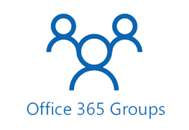
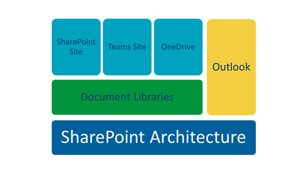

Office Groups 365 Training

Microsoft Office 365 Groups is a suite of applications designed to help foster team interaction and collaboration. Included in Office Groups are Microsoft SharePoint, Microsoft Teams, Microsoft OneDrive for Business, and Microsoft Outlook. All of these applications are essentially different user interfaces to the underlying SharePoint architecture.
The following diagram shows how the underlying SharePoint architecture is accessed through the SharePoint site, the Teams site, OneDrive, or Outlook.

When an Office Group is created, a SharePoint site is created. The underlying architecture of this SharePoint site is the core engine for communication and file sharing for the group. The other applications in the suite, such as Teams and OneDrive, are additional views and points of entry to the underlying SharePoint architecture.
SharePoint
The SharePoint site interface (the view the user has for the site) is created using the team template (not to be confused with Microsoft Teams which is another application in the Office Groups suite). This template includes applications and tools, such as Conversations and OneNote, to facilitate team communication and collaboration. The SharePoint site can be used by members of a team as well as users outside of the team. It is intended to provide a more global approach to communication and knowledge sharing.
Teams
Another application in the Office Groups suite is Microsoft Teams. This is the hub for communication and collaboration within a department or project team. It is a tool that includes team communication, file sharing, and knowledge sharing in one centralized interface. Teams is intended for use by a specific department or project team to foster communication and collaboration within that team. It has a more limited structure than SharePoint and is not meant to provide the global access that SharePoint provides.
OneDrive
Microsoft OneDrive for Business is the online file storage application in the Office
Groups suite. All Vertex employees are provided with a OneDrive folder for their own
use. The personal OneDrive folder uses a cloud icon followed by OneDrive - Vertex,
Inc ( ). In addition to OneDrive folders for individual use, a OneDrive for Business folder
is created for each Office Group that is created. The corporate OneDrive folder uses
a building icon followed by Vertex, Inc (). Note that this is a different location than the individual employee folders. The
OneDrive for Business folder that is created with the Office Group is where the document
libraries for that group are housed and files in those libraries are stored. It is
not recommended that you synchronize a SharePoint folder with OneDrive. Synchronizing
may cause problems, such as files always opening as read-only.
). In addition to OneDrive folders for individual use, a OneDrive for Business folder
is created for each Office Group that is created. The corporate OneDrive folder uses
a building icon followed by Vertex, Inc (). Note that this is a different location than the individual employee folders. The
OneDrive for Business folder that is created with the Office Group is where the document
libraries for that group are housed and files in those libraries are stored. It is
not recommended that you synchronize a SharePoint folder with OneDrive. Synchronizing
may cause problems, such as files always opening as read-only.
Outlook
The final application in the Office Groups suite is Microsoft Outlook. When an Office Group is created, the group is added to Outlook for all members. This enables communication with all group members using email.
When you plan your Office Groups strategy, it is important to understand the relationships between the different applications and how they can best work for the project. Some good questions to ask include the followings:
-
Who will need access to the site? Each component in the Groups suite is intended for specific audiences. Knowing who will need to access the information in the site can impact the focus of the site or the security settings. For example, SharePoint can be used by members of the team, users outside of the team, and even users outside of the company. It is intended to provide a more global approach to communication. Microsoft Teams, however, it is intended more for use by a specific team and to foster communication and collaboration within that team. Note, however, that since SharePoint is still used as the underlying architecture, you can open parts of a Team site to users outside of your team.
-
How will the site be used? This plays a key role in determining what applications to install with the site. For example, you can use a wiki, a discussion board, Microsoft Planner, Microsoft OneNote, surveys and forms, and more. Understanding what the users will need and how they will use the site will help you determine what to install and where. If you use both SharePoint and Teams, you have additional options for incorporating applications. For example, you can use a SharePoint Document Library to share files with users outside of the team but a Microsoft Teams wiki for sharing information within the team.
-
What is the purpose of the site? This will help you determine what components to use. For example, if the purpose of the site is to share knowledge with the rest of the company, then SharePoint is a better tool than Teams.
Related topics